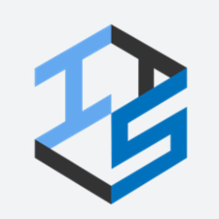
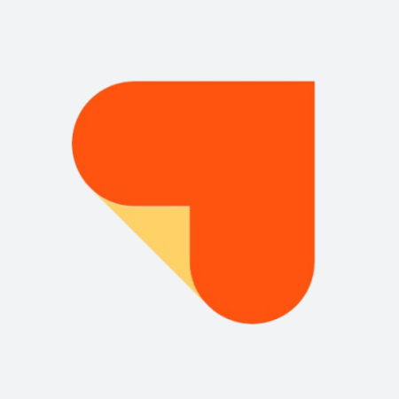
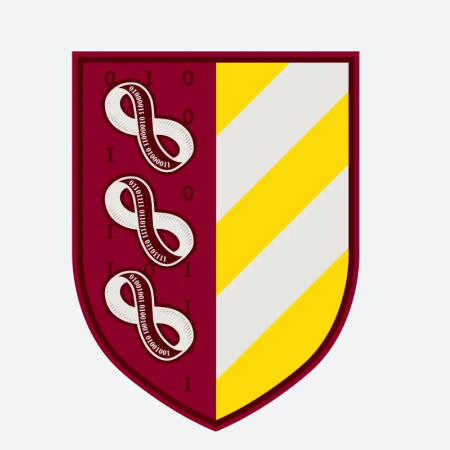

▲ KUITS website
(opens in a new window)
|
2023.09 - present
KUITS
regular member, vice president (2024.06~)
- Korea University's academic society of IT business
-
With other club members, I studied trends in the IT business
field and participated in some projects in collaboration with IT
service companies.
-
After completing all activities, I am now serving as the vice
president of the club, managing member recruitment and the
curriculum.
|

▲ Healing Paper website
(opens in a new window)
|
2024.03 - 2024.07
Healing Papaer
internship
- BizOps team, business data analysis intern
-
Healing Paper operates a medical beauty platform called
"GangnamUnni".
-
I learned various techniques used in data anlysis and how to
derive business insights from the results of data analysis.
|

|
2022.09 - 2022.12
KUGODS
associate member
- Korea University's Google developer student club (GDSC)
-
As an associate member, I participated in a study group where we
learned basic computing skills and essential concepts in
computer science.
|

▲ KU Department of C.S. website
(opens in a new window)
|
2022.09 - present
Korea University
B.S. degree expected in Computer Science and Engineering
- second major
-
Korea universiy, my home university, encourages every student to
pursue a second or more major other than their first major by
double major program.
-
I entered Korea Univesity in 2020 with a major in Psychology,
and was accepted into the double major program in Computer
Science and Engineering in 2022.
|